نموذج تعلم عميق احتمالي للتمييز بين الحدبات واللباب في المجرات القزمة
الملخص
تُكوّن المحاكاة العددية ضمن كوسمولوجيا المادة المظلمة الباردة (DM) هالاتٍ تمتلك ملفات كثافة ذات ميل داخلي حاد (‘حدبة’)، غير أن أرصاد المجرات غالبا ما تشير إلى ‘لب’ مركزي مسطح. نطوّر نموذجا لشبكة عصبية التفافية لكثافة المزائج لاشتقاق دالة كثافة احتمال (PDF) لميول الكثافة الداخلية في هالات المادة المظلمة. ندرّب الشبكة على مجرات قزمة محاكاة من مشروعي NIHAO و AURIGA، وهي تشمل كلا من حدبات المادة المظلمة ولبابها: إذ تُستخدم سرعات خط البصر والتوزيعات المكانية ثنائية الأبعاد 2 لنجومها مدخلاتٍ للحصول على دالة كثافة احتمال تمثل احتمال التنبؤ بميل داخلي محدد. يستعيد النموذج بدقة ملفات المادة المظلمة المتوقعة: تقع القيمة المشتقة للميل الداخلي في 82 من المجرات ضمن 0.1 من قيمتها الحقيقية، بينما تقع 98 منها ضمن 0.3. ونطبق نموذجنا على أربع مجرات كروانية قزمة في المجموعة المحلية، فنجد نتائج متسقة مع تلك المستخلصة باستعمال الشيفرة GravSphere القائمة على نمذجة جينز: إذ تُظهر مجرة Fornax dSph دليلا قويا على امتلاك لب مركزي من المادة المظلمة، وتمتلك Carina و Sextans حدبتين (مع لايقين كبير في الأخيرة)، في حين تُظهر Sculptor دالة كثافة احتمال ثنائية القمة تشير إلى تفضيل الحدبة، مع عدم إمكان استبعاد اللب. تبين نتائجنا أن الاستدلال القائم على المحاكاة باستعمال الشبكات العصبية يوفر طريقة مبتكرة ومكملة لتحديد ملفات كثافة المادة الداخلية في المجرات، وهو ما يمكن بدوره أن يساعد في تقييد خصائص المادة المظلمة المراوغة.
keywords:
المجرات: قزمة - تطور - تشكل - هالات - مادة مظلمة1 المقدمة
تمتلك هالات المادة المظلمة (DM) التي تتشكل في المحاكاة ضمن سياق كوسمولوجي ملف كثافة مميزا، له ميل داخلي لوغاريتمي قدره -1 (Navarro et al., 1996b, the NFW profile). وقد أُشير إلى ملف الكثافة الداخلي الحاد هذا باسم ‘حدبة’. ومع ذلك، أظهرت أرصاد المجرات القزمة التي تسكن هذه الهالات تعارضات مع تنبؤات النموذج، إذ تقدم أدلة مهمة على أن عددا من هذه المجرات يمتلك ملف كثافة داخليا مسطحا ذا ميل يقترب من الصفر، ويُشار إليه باسم ملف ‘لبي’ (Moore, 1994). وقد عُرف التباين بين النظرية والأرصاد باسم مشكلة ‘اللب-الحدبة’ (e.g. Simon et al., 2005; de Blok et al., 2008; Bullock & Boylan-Kolchin, 2017).
مع أن عدة نماذج بديلة للمادة المظلمة اقتُرحت على مر السنين لمعالجة هذه المسألة (e.g. Spergel & Steinhardt, 2000; Kaplinghat et al., 2016; Schneider et al., 2017)، فقد تبيّن أيضا أن اللباب يمكن تفسيرها ضمن عند أخذ تأثير الباريونات في المادة المظلمة بالحسبان. فقد أظهر Navarro et al. (1996a) أنه إذا تراكم الغاز ببطء على مجرة قزمة ثم أُزيل فجأة عبر عمليات مثل الرياح النجمية أو تغذية المستعرات العظمى الراجعة، فإن توزيع المادة المظلمة يمكن أن يتمدد، مخفضا الكثافة المركزية للهالة. ويكون أثر تسخين المادة المظلمة هذا صغيرا في الظروف الواقعية (Gnedin & Zhao, 2002)، لكن Read et al. (2006) بيّنوا أنه إذا تكرر الأثر عبر عدة دورات من تشكل النجوم، فإنه يتراكم مؤديا إلى تكوّن لب كامل. ويمكن أن يكون هذا اللب دائما إذا كانت التدفقات الخارجة سريعة بما يكفي (Pontzen & Governato, 2012). وقد نجحت بالفعل المحاكاة الهيدروديناميكية الحديثة للمجرات القزمة التي تراعي التغذية الراجعة الباريونية وتمتلك عتبة كثافة مرتفعة بما يكفي لتشكل النجوم في تكوين لباب للمادة المظلمة (e.g. Governato et al., 2010; Di Cintio et al., 2014a; Tollet et al., 2016; Chan et al., 2015). ومع ذلك، لا تزال مشكلة ‘الحدبة-اللب’ بعيدة عن الحل الكامل، نظرا إلى صعوبات الكشف عن توزيع المادة المظلمة الكامن في المجرات القزمة المرصودة، وقد بُذل جهد كبير في تطوير وتحسين طرائق استنتاج ملف كثافة المادة المظلمة الداخلي لهذه المجرات.
إن تحليل سرعة دوران الغاز في المجرات منخفضة السطوع السطحي، على سبيل المثال، يتيح اشتقاق توزيع المادة المظلمة الكامن فيها وملاءمته، مشيرا إلى وجود لب من المادة المظلمة في مثل هذه الأنظمة (مثلا Moore, 1994; Gentile et al., 2004; de Blok et al., 2008; Lelli et al., 2016). ومن جهة أخرى، في المجرات المدعومة بالضغط والخالية من الغاز، مثل المجرات القزمة الكروانية (dSphs) الموجودة ضمن المجموعة المحلية، تأتي المعلومات الحركية التي تعتمد عليها النمذجة الديناميكية من توزيع سرعات خط البصر لمكونها النجمي.
استُخدمت طرائق متنوعة على المجرات القزمة لاشتقاق كثافة المادة المظلمة المركزية فيها، مثل نمذجة جينز (مثلا van der Marel, 1994; Kleyna et al., 2001; Battaglia et al., 2008; Read et al., 2019; Collins et al., 2021) أو نمذجة شفارتزشيلد (مثلا Schwarzschild, 1979; Cappellari et al., 2006; van den Bosch & de Zeeuw, 2010; Breddels et al., 2013; Breddels, Maarten A. & Helmi, Amina, 2013). وتبدو النتائج في الأدبيات مشيرة إلى أن ملفات المادة المظلمة اللبية مفضلة على الملفات الحدبية في مجرة Fornax dSph (مثلا Geha et al., 2006; Walker & Peñarrubia, 2011; Brook & Di Cintio, 2015; Pascale et al., 2018)، في حين أن حالة Sculptor، وهي نظام آخر مدروس جدا، لا تزال موضع نقاش واسع بشأن ما إذا كانت هالة مادتها المظلمة لبية أم حدبية، وربما تشير إلى وجود حدبة خفيفة (مثلا Breddels, Maarten A. & Helmi, Amina, 2013; Zhu et al., 2016; Hayashi et al., 2020) (للاطلاع على مراجعة لهذه الموضوعات، انظر Battaglia et al. 2022 والمراجع الواردة فيها).
غير أن أحد القيود المركزية للنماذج المذكورة سابقا ينشأ من عدم اليقين في تباين مدارات النجوم، في حالة نمذجة جينز، مما يسبب انحلالا مع ملف الكتلة الكامن (Binney & Mamon, 1982)؛ أما نمذجة شفارتزشيلد، من جهة أخرى، فتعيقها حساسيتها للبيانات المتاحة (Kowalczyk et al., 2017).
في هذا العمل نقدم طريقة بديلة ومبتكرة للتمييز بين الحدبات واللباب في المجرات القزمة اعتمادا على تقنيات تعلم الآلة. وعلى وجه التحديد، نستخدم شبكات عصبية التفافية لكثافة المزائج لتحديد توزيع لاحق للملف الداخلي لهالات المادة المظلمة. وقد طُبق هذا النهج العام بنجاح في قياس كتل العناقيد من ديناميكيات المجرات (e.g. Ho et al., 2019; Kodi Ramanah et al., 2021; Kodi Ramanah et al., 2020). تستخدم الشبكة العصبية، بوصفها مدخلات، خرائط فضاء الطور للتوزيعات الموضعية والديناميكية للنجوم داخل المجرات.
نستخدم مجموعة من 171 مجرة قزمة من مشروع NIHAO ذات شروط ابتدائية ومعاملات مختلفة (Wang et al., 2015; Dutton et al., 2020) و 12 مجرة قزمة من مشروع AURIGA (Grand et al., 2017) مجموعةَ تدريب للشبكة. ثم نطبق نموذجنا الجديد على أربع مجرات كروانية قزمة تابعة لدرب التبانة لاستنتاج الميل الداخلي لملفات كثافة مادتها المظلمة.
تُنظم الورقة على النحو الآتي. في القسم 2 نقدم مجموعة بيانات المحاكاة وبنية تعلم الآلة. وفي القسم 3 نعرض نتائج النموذج المدرّب على مجموعة الاختبار، ثم نطبق النموذج على المجرات القزمة المرصودة في القسم 4. وتناقَش الاستنتاجات في القسم 5.
2 الطرائق
2.1 مجموعة التدريب
لتدريب نموذجنا نحتاج إلى مجموعة كبيرة من المجرات القزمة المحاكاة ذات ملفات كثافة معروفة جيدا. نستخدم محاكاة كوسمولوجية كاملة من مشروعي NIHAO (Wang et al., 2015) و AURIGA (Grand et al., 2017)، حيث تتطور المادة المظلمة والمادة الباريونية معا، مما يجعل مجموعة التدريب لدينا واقعية قدر الإمكان.
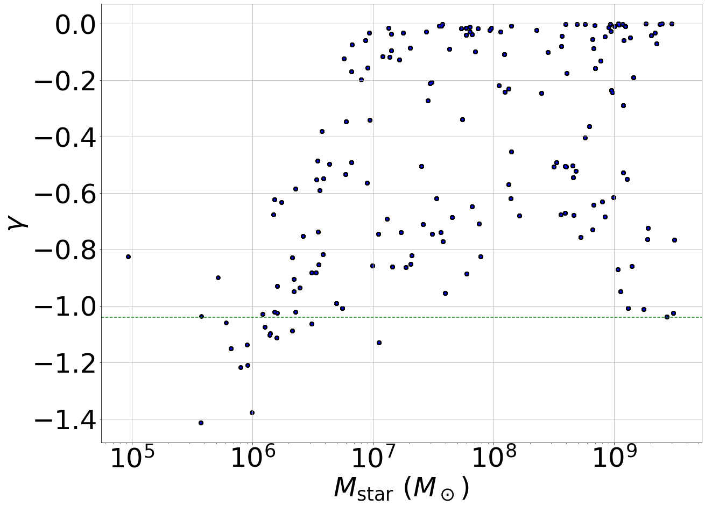
ومن المهم أن ندرج محاكاة لمجرات ذات حدبات ولباب معا في مناطقها المركزية، وبكتل نجمية مختلفة، لتقليل أي اعتماد منهجي للحدبات واللباب على خصائص مثل الكتلة. ففي الواقع، تمتلك مجرات NIHAO القياسية ملف كثافة مترابطا بقوة مع الكتلة (Di Cintio et al., 2014b; Macciò et al., 2020)، مما سيسمح لشيفرة تعلم الآلة بالتنبؤ بالحدبة أو اللب اعتمادا على أي مؤشر للكتلة الكلية، لا اعتمادا على تفاصيل سرعات النجوم ومواضعها. لذلك نستخدم محاكاة لها نطاق من المدخلات الفيزيائية و/أو المعلمية المختلفة، بما يعني أن مجموعتنا النهائية من المحاكاة تشمل نطاقا من الميول الداخلية عند كتل وأحجام مختلفة. ندرج أولا مجرات قزمة ضمن نموذج NIHAO القياسي، تتراوح كتلة هالاتها من M⊙ إلى M⊙ وتتراوح كتلتها النجمية من رتبة M⊙ إلى M⊙. يتضمن هذا النموذج تغذية راجعة طاقية من النجوم الضخمة والمستعرات العظمى (Stinson et al., 2006)، وقد ثبت أنها قادرة على تعديل ملف الكثافة الداخلي وإنتاج اللباب، ولا سيما في المجرات المحاكاة ذات الكتلة النجمية بين M⊙و M⊙ (Di Cintio et al., 2014a). نستخدم أيضا محاكاة لأقزام من Dutton et al. (2020)، توظف النموذج نفسه كما في محاكاة NIHAO القياسية، ولكن بعتبات مختلفة لتشكل النجوم تتراوح من = 0.1 إلى 100 جسيم لكل سم-3: وهذا يترجم إلى مجرات ذات كتل نجمية متشابهة تنتهي بملفات كثافة مختلفة، إذ ثبت أن عتبة كثافة تشكل النجوم من أهم المعاملات في تكوين اللب في المحاكاة الباريونية (انظر Benítez-Llambay et al. 2019; Dutton et al. 2020). ونضيف كذلك مجموعة محاكاة بلا تغذية راجعة نجمية، أُجريت من الشروط الابتدائية نفسها لمحاكاة NIHAO القياسية (Wang et al., 2015). وتؤدي طاقة التغذية الراجعة الكلية الأقل إلى ملفات كثافة داخلية مختلفة عن المحاكاة التي تتضمن التغذية الراجعة النجمية، للشروط الابتدائية نفسها، وبذلك تزيد أكثر التنوع المرغوب في ملفات المادة المظلمة المركزية عند كتلة مجرية معطاة. وأخيرا، ندرج 12 مجرة قزمة محاكاة من مشروع AURIGA (Grand et al., 2017)، وجميعها ذات حدبة مركزية في المادة المظلمة.
لدينا 183 مجرة قزمة محاكاة في المجموع: 60 محاكاة من مجموعة NIHAO القياسية (Wang et al., 2015)، و 101 محاكاة من Dutton et al. (2020) ذات عتبات كثافة وملفات كثافة متغيرة، و 10 محاكاة من دون تغذية راجعة نجمية أيضا من Wang et al. (2015)، و 12 محاكاة من Grand et al. (2017). وبمجملها تمتد كتل الهالات في هذه المحاكاة بين Mhalo= M⊙و Mhalo= M⊙. تحل محاكاة NIHAO ملف الكتلة للمجرات إلى ما دون 1 في المئة من نصف قطرها الفيروسي عند جميع الكتل، في حين صُممت محاكاة AURIGA بحيث يكون لها حد تليين فيزيائي أقصى قدره فرسخا فلكيا.
نعرّف قيمة الميل الداخلي للمادة المظلمة في المجرات المحاكاة بوصفها الميل عند 150 فرسخ فلكي من ملف كثافة المادة المظلمة لكل مجرة. وتُستقرَأ هذه القيمة من ملاءمة ملف الكثافة مع ملف قانون قوة مزدوج (Di Cintio et al., 2014b)، بغية تجنب أثر الضجيج في ملف الكثافة المحسوب من المحاكاة في المناطق الداخلية القريبة جدا من طول التليين 11 1 هذا الاستقراء معقول بالنظر إلى أن مجرات AURIGA، مع أنها غير محلولة عند r370 فرسخ فلكي، تُظهر باستمرار كثافة داخلية حدبية، أي لا توجد علامة على لب مركزي اصطناعي للمادة المظلمة.. ونحصل في النهاية على مجموعة من الأقزام المحاكاة التي تُظهر نطاقا من ملفات الكثافة: ويمكن رؤية العلاقة بين الكتلة النجمية والميل الداخلي لهالة المادة المظلمة في مجموعة بياناتنا الكاملة في الشكل 1.
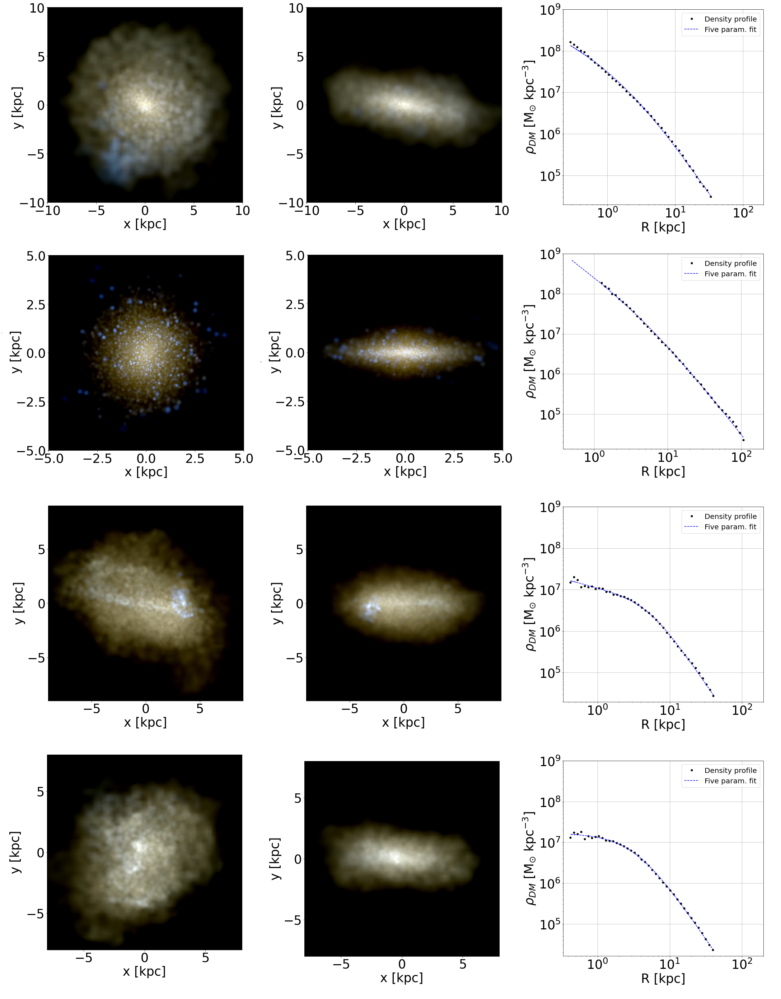
لزيادة حجم مجموعة التدريب لدينا، نستخدم 3 خطوات زمنية مختلفة للمخرجات لكل مجرة: z=0، و z=0.112، و z=0.226. وتكون كل مجرة محاكاة قد وصلت إلى الاتزان الفيروسي بالفعل عند هذه الانزياحات الحمراء، ولذلك يمكن أخذ لقطات مختلفة للقزمة. ومع أن هذا الإجراء لا يغير كثيرا نطاق ملفات الكثافة الناتجة، فإنه يغير مواضع النجوم وسرعاتها داخل كل مجرة. ونحصل في النهاية على عينة من 549 لقطة مجرية سنستخدمها مجموعة تدريب لطريقتنا. نعرض في الشكل 2 أمثلة على التصويرات النجمية لمجرات محاكاة لبية وحدبية مع ملفات المادة المظلمة المقابلة لها. ثم نشرع في اختيار النجوم ضمن كل لقطة مجرية. وعادة ما يكون عدد النجوم التي تتوفر لها بيانات طيفية في مجرات المجموعة المحلية القزمة من رتبة المئات أو الآلاف، في حين يتراوح عدد الجسيمات النجمية المتاحة في مجراتنا المحاكاة من بضع مئات إلى عدة ملايين، بمتوسط يبلغ نحو جسيم نجمي في كل مجرة.
لذلك، ومن أجل محاكاة عينة رصدية من النجوم وتوسيع مجموعة التدريب أكثر، قسمنا العينة الكاملة من النجوم في كل مجرة محاكاة إلى حد أدنى قدره 20 مجموعات فرعية، تتكون كل منها من نجوم مختارة عشوائيا. ويعتمد عدد النجوم داخل كل مجموعة فرعية لمجرة معينة على العدد الكلي للجسيمات النجمية في المحاكاة، مع حد أعلى قدره نجم وحد أدنى قدره 200 نجم. ثم تُسقط نجوم كل مجموعة فرعية على مستويات سماء اعتباطية لمحاكاة مجرات مرصودة من زوايا رؤية مختلفة. وتُعرّف هذه النجوم المسقطة بمواضعها (، ) وسرعة خط البصر الخاصة بها . ونفرط في أخذ عينات لبعض المجرات بإجراء إسقاطات متعددة لكل مجموعة فرعية منها، ونقلل أخذ العينات لبعض المجرات، بهدف جعل مجموعة التدريب ذات توزيع منتظم للميول الداخلية: وهذا يجنب النموذج الانحيازات أثناء التدريب. ونحصل في النهاية على إجمالي 10273 مجموعة بيانات لتدريب نموذجنا، تتكون كل منها من نجوم مختارة عشوائيا ضمن مجرات محاكاة مختلفة وبزوايا رؤية مختلفة، وخزنا لها معلومات عن مواضعها (، ) وسرعات خط البصر .
2.2 مدخلات المعلومات
مدخلات نموذج شبكتنا العصبية العميقة هي دوال كثافة احتمال (PDFs) مستمرة ثنائية الأبعاد 2 لتوزيع النجوم في فضاءات الطور المسقطة، مبنية باستعمال تقديرات كثافة النواة ثنائية المتغير (KDEs). وتتيح لنا الخريطة المولدة باستخدام KDEs احتواء سمات التوزيعات المتقطعة الأصلية بالشكل نفسه حتى لو كانت كل مجموعة فرعية مجرية ممثلة بعدد مختلف من النجوم.
2.2.1 تقدير كثافة النواة
لتكن ، ، …، عينة ذات حجم من متغير عشوائي ذي كثافة ، حيث يكون كل متغير متجها ثنائي الأبعاد في حالة KDE ثنائي المتغير. ويُعطى تقدير كثافة النواة لـ عند النقطة بالصيغة
| (1) |
حيث إن K دالة نواة و مصفوفة عرض حزمة 2x2.
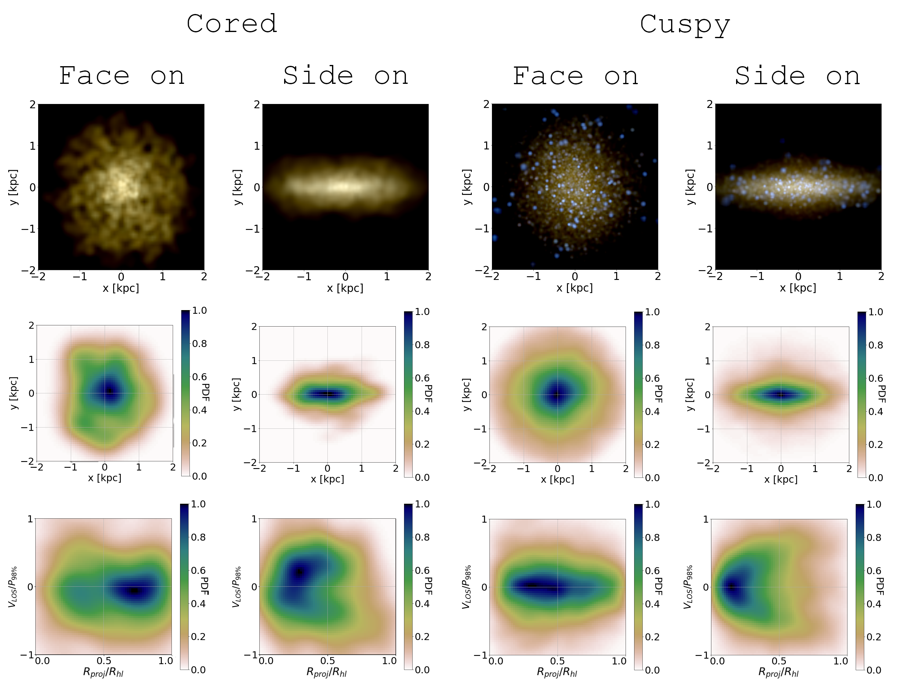
يجمع KDE إسهامات الكثافة من مجموعة نقاط البيانات عند نقطة التقييم ، بحيث تسهم نقاط البيانات القريبة من إسهاما كبيرا في الكثافة الكلية، بينما تسهم نقاط البيانات الأبعد عن بقدر أقل. ويُحدد شكل تلك الإسهامات بواسطة K، أما أبعادها واتجاهها فيحددهما . وعادة تُختار دالة النواة K لتكون كثافة احتمال متماثلة حول الصفر (Sheather, 2004). في هذا العمل نستخدم نواة غاوسية ثنائية الأبعاد 2:
| (2) |
حيث . وبالنسبة إلى مصفوفة عرض الحزمة، يُضرب عامل قياس في مصفوفة التغاير للبيانات، حيث هو عدد نقاط البيانات.
2.2.2 مدخلات النموذج
من المعلومات المسقطة (المواضع في المستوى x-y و ) لعينة النجوم التي تمثل كل مجرة صنعنا خريطتين:
-
•
دالة كثافة احتمال مأخوذة العينات عند 64x64 نقطة، لتوزيع النجوم في فضاء الطور {x,y}، بين -2 كيلوفرسخ فلكي و 2 كيلوفرسخ فلكي في كل إحداثي، في النظام المرجعي حيث تكون (x,y) = (0,0) مركز المجرة.
-
•
دالة كثافة احتمال مأخوذة العينات عند 64x64 نقطة، لتوزيع النجوم في فضاء الطور {}، حيث هو الموضع الشعاعي المُطبّع بنصف قطر نصف الضوء ، و هي سرعة خط البصر المُطبّعة بالمئين 98% للقيمة المطلقة لـ لجميع نجوم العينة. ويتراوح من 0 إلى 1، ويتراوح من -1 إلى 1.
في الشكل 3 نعرض مدخلات نموذجنا، بوصفها دوال كثافة الاحتمال المقابلة للخريطتين، لمجرة لبية (يسارا) وأخرى حدبية (يمينا).
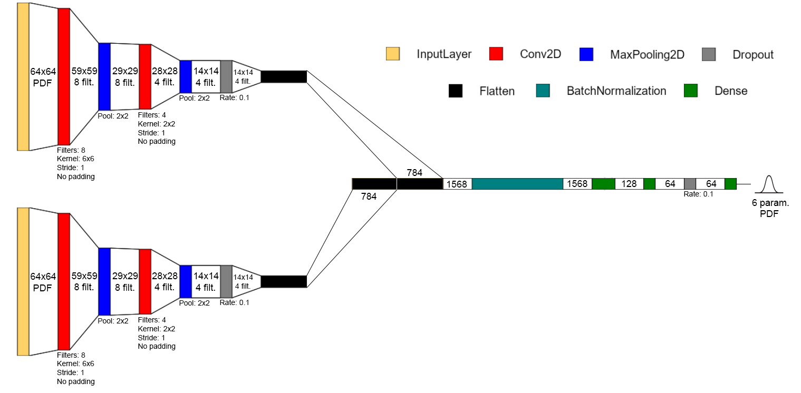
2.3 النموذج
في هذا العمل، نستخدم شبكات عصبية التفافية لكثافة المزائج (MDCNNs) لربط بيانات المدخلات، المؤلفة من دالتي كثافة الاحتمال الموصوفتين في القسم 2.2.1، بالميول الداخلية لملفات المادة المظلمة في المجرة المرتبطة بهاتين الدالتين. ونقرب التوزيع اللاحق للميول بمجموع توزيعين غاوسيين أحاديي البعد، تقدّر الشبكة العصبية معاملاتهما. 22 2 إن استخدام غاوسي مزدوج يعطي تنبؤات أدق من استخدام غاوسي مفرد. ومن جهة أخرى، لا يؤدي استخدام أكثر من غاوسيين إلى تنبؤات أدق للميل. يأخذ نموذجنا مدخلا على هيئة صورة ذات قناتين تتكون من دالتي كثافة الاحتمال على فضاء الطور {} وفضاء الطور {x,y} كل على حدة. تمرر الصور عبر 2 طبقات التفافية متسلسلة. ثم تُدمج مخرجات الفرعين الالتفافيين وتُغذى إلى شبكة مكتملة الاتصال ذات 3 طبقة. ويتكون الخرج النهائي من 6 معاملات تعلّم التوزيع اللاحق الغاوسي المشترك أحادي البعد 2.
يمكن رؤية منظر تخطيطي للبنية المستخدمة في هذا العمل في الشكل 4، في حين توجد في الملحق A وصف أكثر تفصيلا للطبقات المختلفة وطرائق الشبكة العصبية.
2.3.1 التدريب والتقييم
يجري التدريب على مجموعة تدريب تتكون من 10273 مجموعة فرعية مجرية مع ميولها الداخلية المقابلة، التي تعمل بوصفها أهدافا. ودالة الخسارة المراد تقليلها أثناء التدريب هي الاحتمالية اللوغاريتمية السالبة لعينة التدريب، المعرفة كما يلي:
| (3) |
حيث هو الميل الداخلي للمجموعة الفرعية المجرية ، و مجموعة معاملات التوزيع . وبالنسبة إلى مجموعة فرعية مجرية معينة، تكون الاحتمالية هي قيمة دالة كثافة الاحتمال (المعرّفة بتوزيع غاوسي متعدد المتغيرات بوصفه خرج الطبقة الأخيرة) عند قيمة ميلها الداخلي الحقيقية؛ أي الاحتمال الذي يتنبأ به النموذج لأن يكون الميل الداخلي للمجرة هو قيمته الصحيحة:
| (4) |
حيث هو الغاوسي بمتوسط وانحراف معياري ، و وزن الغاوسي ، بحيث ، ومن ثم يكون مجموعة من ستة معاملات (متوسط، وانحراف معياري، ووزن لكل من الغاوسيين).
يجري تقليل دالة الخسارة باستعمال محسّن تقدير العزوم التكيفي (ADAM)، وهو خوارزمية تحسين تستخدم تقنية الانحدار التدرجي التكرارية. وقد ثبت أن ADAM، بين خوارزميات طرائق التعلم الشائعة، يحقق أداء وتكلفة حاسوبية مفضلين (Kingma & Ba, 2014). بعد التدريب، يخرج تقييم النموذج توزيعا غاوسيا متعدد المتغيرات يمكن فهمه بوصفه تقريبا للتوزيع اللاحق الحقيقي للميل الداخلي لمدخل معطى، في ضوء التوزيع القبلي للميول الداخلية في مجموعة التدريب. ويمثل هذا اللاحق، إذن، الاحتمال الذي يسنده النموذج إلى قيمة معينة للميل الداخلي في ضوء مجموعة المرصودات وتحت قبلية مجموعة التدريب.
عادة تُبنى مجموعة بيانات الاختبار للتقييم النهائي للنموذج المتقارب بأخذ عدد كاف من العناصر عشوائيا من مجموعة البيانات الكاملة لتمثيل تنوع السمات كله في البيانات على نحو صحيح. في هذا العمل، وبسبب العدد المحدود من المجرات المتاحة، يُتوقع أن يؤدي حذف عدد كبير من المجرات ذات الخصائص المتنوعة من مجموعة بيانات التدريب إلى تدهور أداء النموذج، لأننا لا نملك أمثلة كثيرة مختلفة لمجرات ذات خصائص متشابهة بعضها مع بعض. ولتقييم النموذج على نحو سليم، أجرينا عدة عمليات تدريب كاملة مستخدمين 10 مجرات فقط بوصفها مجموعات بيانات تحقق واختبار في كل عملية، مع تغيير المجرات التي تُخرج من مجموعة بيانات التدريب في كل عملية تدريب لتقييم الشبكة في عدة إسقاطات لكل مجرة. يتيح لنا ذلك تحليل اتساق تدريب النموذج وأدائه في عدد كبير من المجرات من دون المساس بمجموعة بيانات التدريب.
2.3.2 تمثيل اللايقينات
يمثل التوزيع اللاحق الخارج اللايقين العشوائي أو الألياطوري في تنبؤ الميل للنموذج النهائي، لكنه لا يمثل اللايقين الناتج من الطبيعة التصادفية لتحديد الأوزان أثناء تدريب الشبكة العصبية (اللايقين المعرفي)، الذي يمكن أن يؤدي إلى نماذج مختلفة لشروط التدريب نفسها عند التعامل مع بيانات محدودة. نستخدم طريقة إسقاط مونت كارلو (MC-Dropout) (Gal & Ghahramani, 2015) لتقريب اللايقين المعرفي، وهي تقوم على التقييم المتكرر للمدخل نفسه مع تعيين أوزان بعض الطبقات عشوائيا إلى 0 أثناء كل عملية استدلال، لبناء تقييم نهائي يتضمن معلومات إحصائية عن اللايقين المعرفي. وقد أظهر Gal & Ghahramani (2015) أن تطبيق الإسقاط أثناء الاستدلال يكافئ تقريبا عملية غاوسية عميقة احتمالية. وهذا يعني أننا نستطيع قياس اللايقين المعرفي بتطبيق طبقة الإسقاط أثناء الاستدلال لعدد ذي دلالة إحصائية من المرات، والحصول على متوسط وتباين تنبؤيين لكل نقطة من التوزيع اللاحق. واللاحق النهائي المبني لكل إسقاط مجري هو المتوسط المطبع لـ 100 توزيعا لاحقا غاوسيا متعدد المتغيرات يستنتجه النموذج مع طبقات إسقاط نشطة.
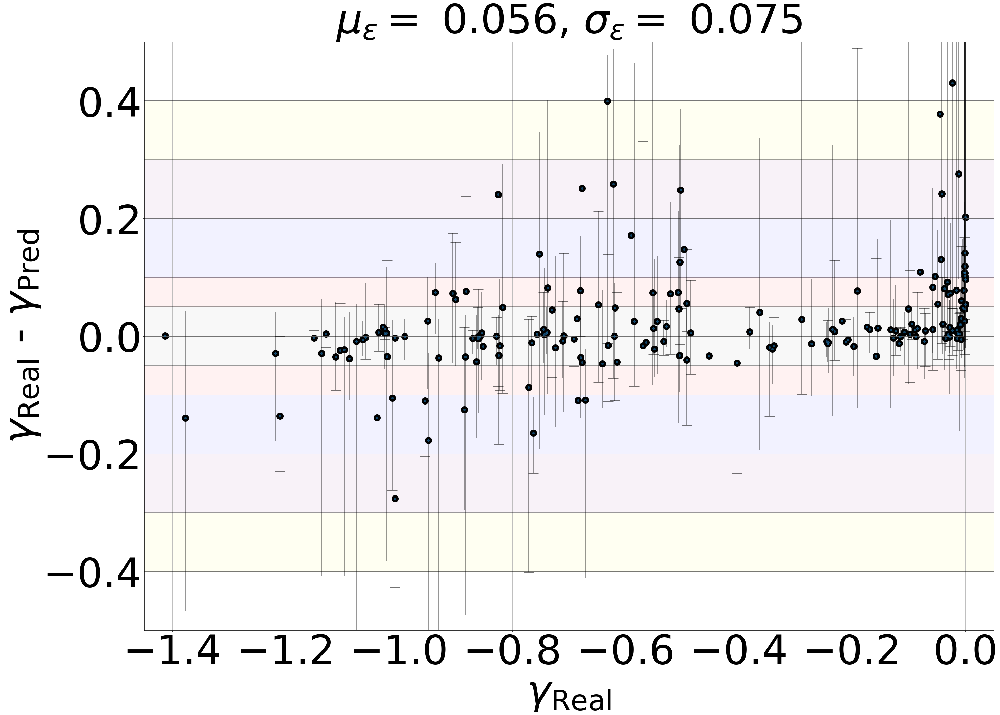
3 النتائج
هدف عملنا هو استنتاج الميل الداخلي اللوغاريتمي لملف كثافة الكتلة في المنطقة المركزية من مجرة (ومن الآن فصاعدا: الميل الداخلي) من بيانات طيفية لعينة عشوائية من نجومها. ولتحقيق ذلك، تُسقط جميع المجرات المحاكاة ومجموعاتها الفرعية من النجوم عشوائيا في عدة مستويات سماوية لمحاكاة عدة زوايا رؤية، وتُدرّب الشبكة العصبية على استنتاج الميل الداخلي للمجرة من مواضع نجومها وسرعات خط البصر الخاصة بها. ولكل مجرة تخرج الشبكة العصبية دالة كثافة احتمال تقرب الاحتمال اللاحق للحصول على ميل داخلي محدد في ضوء المدخلات.
3.1 التنبؤ بالميول الداخلية للمادة المظلمة
نعرّف طريقتين مختلفتين لبناء قيمة الميل المتنبأ بها من التوزيعات اللاحقة:
-
•
باستخدام منوال التوزيع اللاحق (أي القيمة العظمى لدالة كثافة الاحتمال): .
-
•
باستخدام متوسط التوزيع اللاحق المطبع: .
يُعرّف انحراف لتنبؤ ما عن قيمته الحقيقية بأنه ، حيث هو الميل الحقيقي عند 150 فرسخ فلكي لملف المادة المظلمة في محاكاة مجرية. ويمكن رؤية نتائج طريقة المنوال في الشكل 5، الذي يبين الفرق بين الميول الحقيقية والمتنبأ بها في مجراتنا القزمة المحاكاة، ، بدلالة الميل الحقيقي. تمثل كل نقطة متوسط الانحراف لكل إسقاطات كل مجرة منفردة، في حين تشير أشرطة الانحراف إلى القيمة الدنيا والعظمى بين كل إسقاطات كل مجرة الممكنة. وتمثل المناطق الأفقية الملونة المظللة نطاقات لايقين متزايدة، من 0.05 إلى 0.4.
يبلغ متوسط الانحراف المطلق الكلي في الميل الداخلي المتنبأ به، لجميع المجرات في مجموعتنا، لطريقة المنوال و للطريقة الثانية. لاحظ أنه في حين تتناثر المجرات الحدبية والمجرات ‘البينية’ حول = 0، فإن المجرات اللبية المتجهة نحو لا يمكن، بحكم الضرورة، أن تتناثر إلا عند 0، لأن أكبر ميل داخلي ممكن هو 0 بحكم البناء.
| Deviation range ( X) | % of projections with | % of galaxies with |
| 0.05 | 66.67 | 67.80 |
| 0.1 | 80.79 | 81.92 |
| 0.2 | 94.35 | 94.35 |
| 0.3 | 98.31 | 98.31 |
| 0.4 | 99.44 | 98.87 |
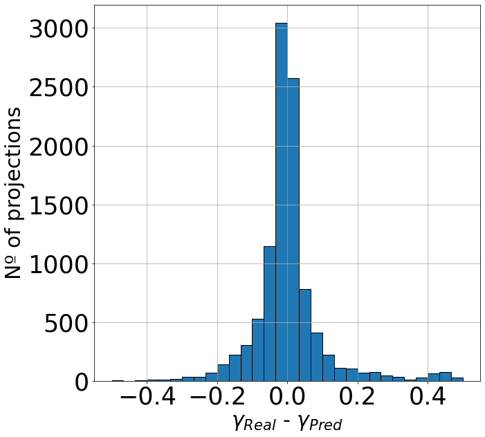
في الجدول 1 يمكننا رؤية النسب المئوية للميول الداخلية المتنبأ بها على نحو صحيح، مع أخذ جميع إسقاطات كل مجرة (العمود الأوسط) وكل مجرة على حدة (العمود الأيمن) في الاعتبار، لمجموعة بيانات الاختبار الكاملة لدينا، ضمن عدة نطاقات لايقين. تستعيد نحو 82 من المجرات الميل الداخلي الحقيقي الصحيح ضمن ، في حين تقع 98% منها ضمن . وهذه النطاقات صغيرة بوضوح بما يكفي لإلقاء الضوء على النقاش المتعلق بوجود اللباب في المجرات القزمة أو عدمه.
وأخيرا، يمكن رؤية مدرج تكراري لتوزيع الانحراف لكل إسقاط من إسقاطات كل مجرة (أي 10273 في المجموع) في الشكل 6، مشيرا إلى أن قيم تبلغ ذروتها حول 0 وتتوزع حولها على نحو متماثل تقريبا، باستثناء المجرات شديدة اللبية التي لها بالتعريف ، كما ذُكر سابقا، ولا تماثل صغير باتجاه التنبؤ بلباب أقوى في المجرات ضمن نطاق الانحرافات الصغيرة. لقد بينا أن طريقتنا تتنبأ بدقة بالميل الداخلي المتوقع للمجرات بغض النظر عن ميلها الحقيقي الفعلي، مع تشتت منتظم غالبا قدره .
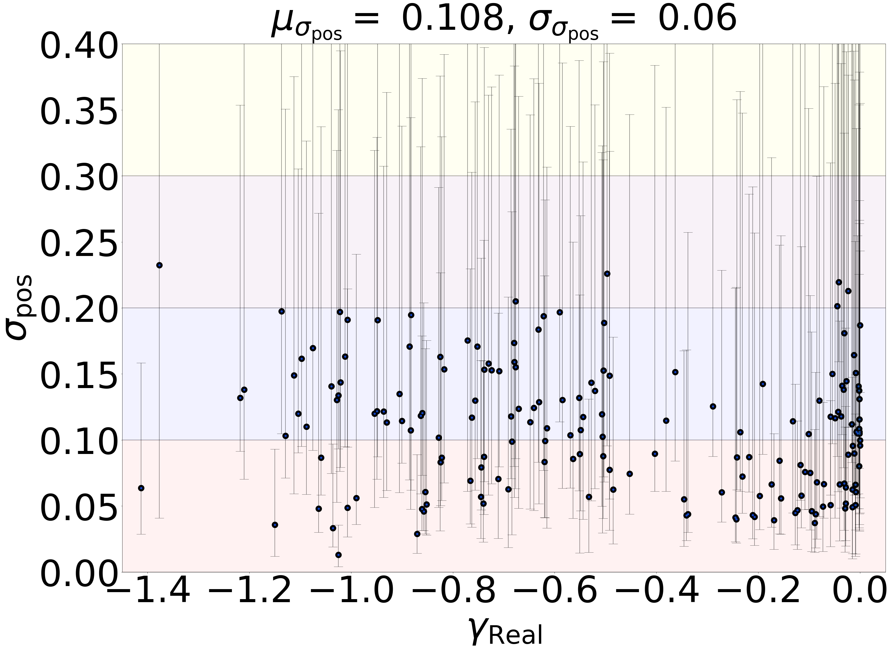
3.2 اللايقين في الاستدلال
في الشكل 7 نعرض الانحراف المعياري لكل دالة كثافة احتمال لاحقة من كل مجرة في مجموعة بيانات الاختبار، معرفا بأنه الجذر التربيعي لتباين التوزيع اللاحق المطبع:
| (5) |
حيث هو التوزيع اللاحق المطبع و هو متوسط التوزيع:
| (6) |
| Region | % of projections for which |
|---|---|
| is within region | |
| 86.29 | |
| 97.57 | |
| 99.73 |
إن متوسط جميع قيم في مجموعة البيانات، ، يقارب 0.1، و 8.99% فقط من الإسقاطات لها قيم أكبر من 0.2، وهي لايقينات صغيرة بما يكفي للتمييز بوضوح بين اللباب والحدبات في الغالبية العظمى من الحالات. ويبين الشكل 7 أن الانحراف المعياري لكل دالة كثافة احتمال لاحقة منتظم عبر قيم الميول الداخلية، أي إن عرض دوال كثافة الاحتمال لا يعتمد على الميل الداخلي للمجرات، بحيث لا ينحاز النموذج نحو استعادة الحدبات أو اللباب بدقة أعلى. وتظهر معظم المجرات تباينا مهما في حجم لايقيناتها تبعا للإسقاط، مما يشير إلى أن مطال اللايقين مترابط بقوة مع زاوية الرصد.
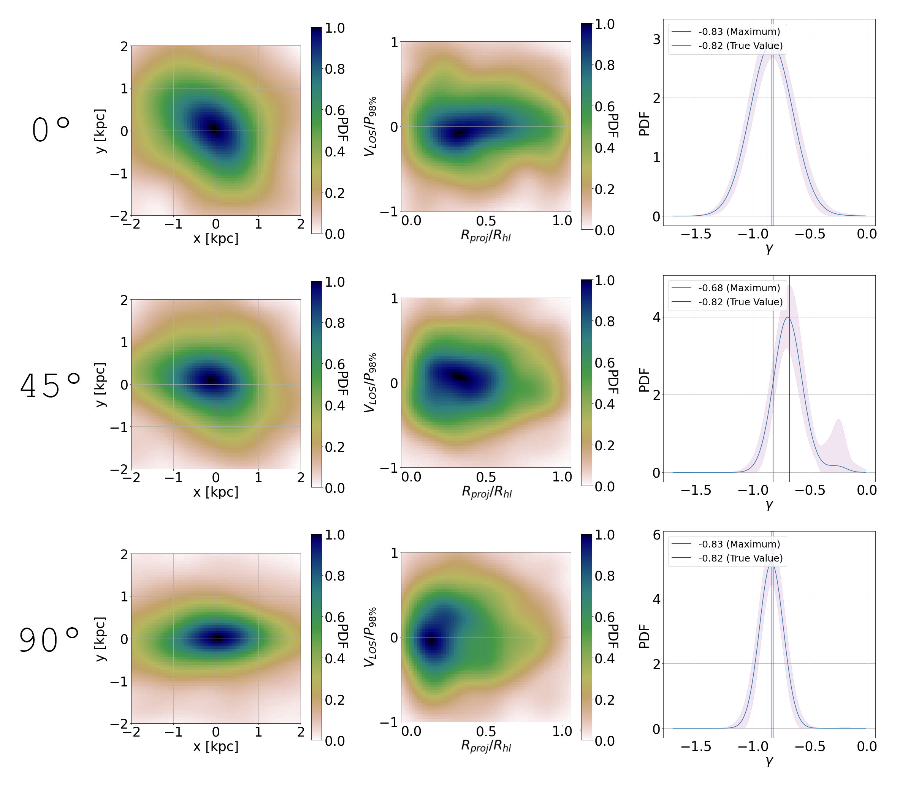
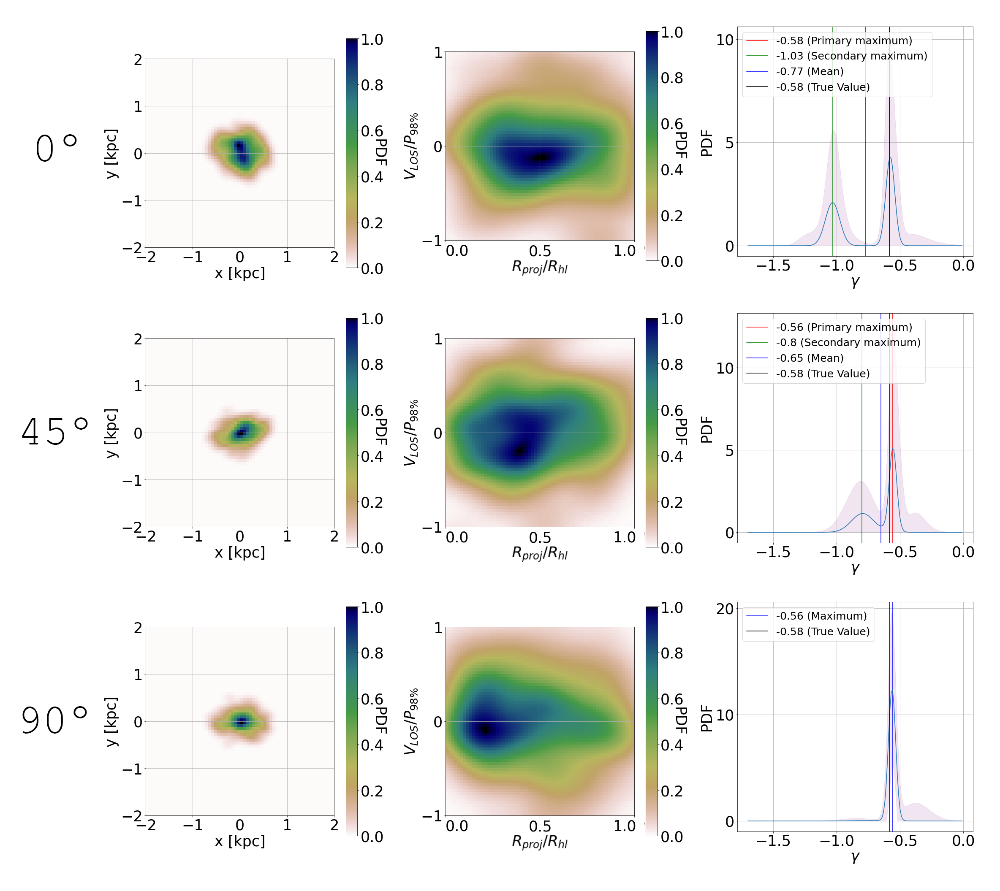
يبين الجدول 2 النسبة المئوية لإسقاطات مجموعة بيانات الاختبار التي تُستعاد فيها القيمة الحقيقية لميلها الداخلي ضمن مضاعفات مختلفة من . وإذا قربنا التوزيعات اللاحقة إلى غاوسيات مفردة (وهو تقريب مناسب لنحو 90% من الإسقاطات)، فإن اللايقين المعاير جيدا ينبغي أن يعطي نحو 68% من المخرجات ضمن مستوى ثقة قدره . وتشير نسبتنا الأكبر () من الإسقاطات ضمن مستوى الثقة إلى أن النموذج يبالغ في التنبؤ باللايقينات ، منتجا توزيعات لاحقة أعرض مما ينبغي. وقد يكون هذا أثرا لمعدل إسقاط مرتفع أكثر من اللازم (انظر الملحق A: تفاصيل نموذج الشبكة العصبية) أثناء التدريب، وهو ما ثبت أنه يحدث مثل هذه النتيجة في نماذج الشبكات العصبية الاحتمالية (Ghosh et al., 2022). وعلى حاله هذا، ينبغي تفسير نموذجنا بوصفه محافظا، إذ إن MDCNN مستقبلية أفضل معايرة ستقدم لايقينات أضيق في استعادة الميل الداخلي الحقيقي للمجرة.
3.3 أثر زاوية الرؤية في استدلال ميول المادة المظلمة
لمعظم التوزيعات اللاحقة للإسقاطات المختلفة توزيع طبيعي تقريبا (إذ يختفي الغاوسي الثاني أو يشكل تصحيحا للالتواء في الغاوسي الرئيسي)، لكن لعدد منها قمتان متميزتان. وعلى وجه التحديد، لدى نحو 30% من المجرات قمم مزدوجة في أكثر من 10% من توزيعاتها اللاحقة. و 54 من هذه المجرات لبية، بينما 46% منها حدبية، مما يشير إلى أن ظهور القمم المزدوجة في دوال كثافة الاحتمال ينشأ في كلا السيناريوهين (هنا نعرّف المجرات اللبية بأنها تلك ذات الميل الداخلي ، وكل مجرة ذات بأنها حدبية). في الشكلين 8 و 9 نعرض دوال كثافة الاحتمال والتوزيعات اللاحقة لمجرتين عند زوايا رصد مختلفة، تمتد بين منظور مواجه ومنظور من الحافة. وتبين هذه الصور على نحو لافت أن عرض دوال كثافة الاحتمال، وكذلك ظهور القمم المزدوجة، مرتبطان بقوة بزاوية رؤية المجرة. وهذا يشير إلى أن ظهور القمم المزدوجة هو نتيجة لكون بعض المعلومات عن ملفات المادة المظلمة الكامنة مخفية عند رؤية المجرة من زاوية معينة، في حين تنكشف وتُنقل بكفاءة إلى الشبكة عند النظر إلى المجرة من زوايا أخرى: ولهذه النتيجة تبعات عميقة في تفسير ‘الحدبة-اللب’ في الأقزام. فمثلا، في الشكل 9 نلاحظ أن القمم المزدوجة في التوزيع اللاحق تختفي عندما تُرى المجرة من الحافة، في حين يوفر التكوين المواجه قمة ثانية تحاكي وجود حدبة.
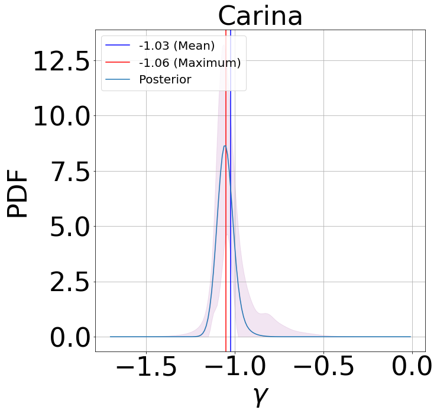
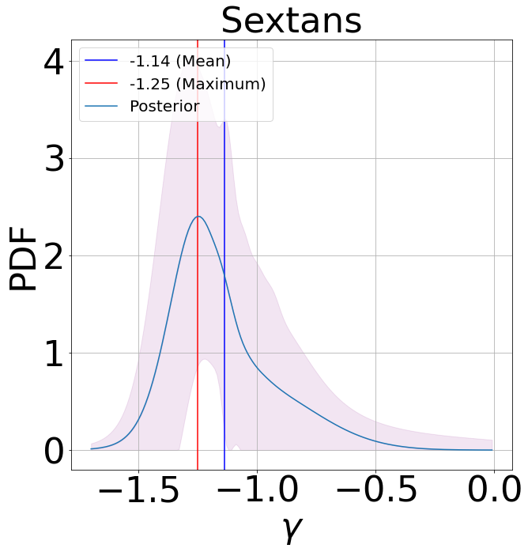
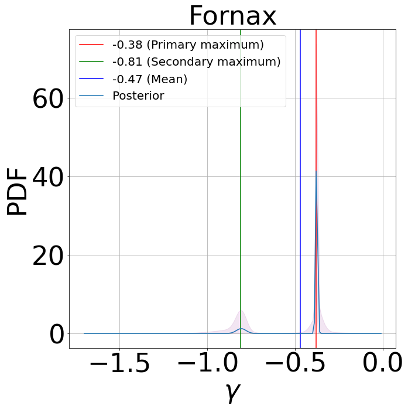
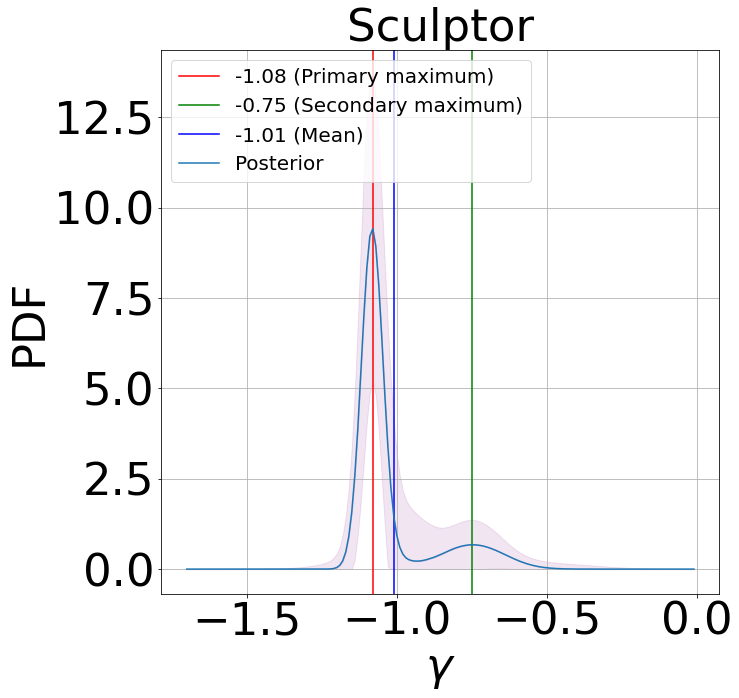
غير أن هذا مجرد مثال، ولدينا عدة حالات لمجرات تظهر فيها القمم المزدوجة في منظر من الحافة وتختفي في منظر مواجه، بحيث لا يرتبط ظهور هذه القمم المتعددة بتكوين محدد من الحافة أو من الوجه: ففي الواقع، يكون توزيع الزوايا لتلك الدوال التي تُظهر قمما مزدوجة منتظما في كامل مجموعة البيانات. وسيُستكشف حدوث دوال كثافة الاحتمال ثنائية القمة ودلالتها وعروضها في أعمال مستقبلية، إذ يتجاوز ذلك نطاق هذه الورقة.
4 التطبيق على المجرات المرصودة
ننتقل إلى اختبار نموذجنا مع مجرات حقيقية مرصودة، للتأكد من قابلية تطبيق النموذج والتحقق من أن الشبكة العصبية لا تكتشف سمات في المجرات المحاكاة لا تقابل أي نظام فيزيائي حقيقي.
اخترنا أربع مجرات كروانية قزمة نُشرت لها عينات طيفية مفصلة من بيانات الحركة النجمية. وفي هذه المرحلة، نعتمد الفهارس التي قدمها Walker
et al. (2009) لمقارنة نتائجنا مباشرة بتلك المستخلصة باستخدام الشيفرة GravSphere، كما في Read
et al. (2019). والمجرات المختارة هي
Carina و Sextans و Fornax و Sculptor، ونستخدم لها كذلك موضع المركز والسرعة والإهليلجية ونصف قطر نصف الضوء كما جُمعت في Battaglia et al. (2022).
لبناء دوال كثافة الاحتمال المدخلة، أخذنا في الاعتبار فقط تلك النجوم التي تملك احتمالا قدره 90% أو أكثر لأن تكون جزءا من المجرة، وأخذنا القيمة المتوسطة لسرعة خط البصر للنجوم ذات القياسات المتعددة. وفي المجموع، أخذنا في الاعتبار 460 نجما لـ Carina، و 1353 لـ Fornax، و 809 لـ Sculptor، و 327 لـ Sextans، واستخدمنا مواضعها المسقطة x-y وسرعات خط البصر. وتُطبّع مواضع x-y باستخدام نصف قطر نصف الضوء المدور ، حيث و ell هما نصف قطر نصف الضوء والإهليلجية من Battaglia et al. (2022).
4.1 اشتقاق ميول كثافة المادة المظلمة المركزية للمجرات الكروانية القزمة باستخدام CNNs
نستنتج الآن الميل الداخلي للأقزام المرصودة. يبين الشكل 10 التوزيعات اللاحقة التي يبنيها النموذج لكل مجرة مرصودة. وتُظهر Fornax قمة ضيقة جدا حول ، مشيرة إلى أن هذه المجرة تمتلك لبا مركزيا قويا من المادة المظلمة، في حين أن قمة ثانوية ستعطي احتمالا قدره 12% بأن يكون الميل الداخلي حول . وهذا متسق مع عدة أعمال سابقة تتنبأ بملف لبي لـ Fornax (see Goerdt et al., 2006; Walker & Peñarrubia, 2011; Brook & Di Cintio, 2015; Pascale et al., 2018, amongst others). أما بالنسبة إلى المجرات الثلاث الأخرى، فيتنبأ النموذج بحدبة بدرجات متفاوتة من اليقين. فلدى النموذج قمة واضحة حول بالنسبة إلى Carina، وهي تقابل تقريبا ميل ملف NFW عند 150 فرسخ فلكي.
| Carina | ||
|---|---|---|
| Sextans | ||
| Fornax | ||
| Sculptor |
تُظهر Sextans لايقينا كبيرا نسبيا في قيمة الميل الداخلي، كما توضحه دوال كثافة الاحتمال العريضة إلى حد ما، مع قمة عريضة حول وجناح أيمن قوي لا ينخفض دون 10 من قيمة القمة حتى يصل إلى . وأخيرا، تبلغ Sculptor ذروتها عند ، لكنها تمتلك قمة ثانوية عريضة، متنبئة باحتمال قدره 18% لامتلاك لب خفيف مع . وقد اشتُق لب صغير لـ Sculptor باستخدام بيانات حركية وملاءمة ملف معتمدة على الكتلة في Brook & Di Cintio (2015)، بما يتفق مع طريقتي Walker & Peñarrubia (2011) و Agnello & Evans (2012) اللتين تنبأتا أيضا بلب في هذه القزمة، عبر توظيف تجمعات نجمية متعددة داخل مجرة (انظر أيضا Zhu et al. 2016; Breddels et al. 2013; Hayashi et al. 2020). ومع ذلك، تتنبأ دراسات أخرى، على نحو مفاجئ، بحدبة في Sculptor في نهاية المطاف (Richardson & Fairbairn, 2014)، مما يبرز أهمية اشتقاق كثافة المادة المظلمة في هذه المجرة الكروانية القزمة بطرائق مختلفة متعددة. وتوفر توزيعاتنا اللاحقة المشتقة مرونة كبيرة في تفسير النتائج، إذ تسمح بتحليل أكثر تعقيدا مقارنة بالنماذج التي لا تتيح إلا نطاقات لايقين حول القيمة المستنتجة.
نقارن نتائج نموذجنا بالميول الداخلية المستنتجة لهذه المجرات نفسها عند 150 فرسخ فلكي باستخدام GravSphere، وهي شيفرة غير معلمية لتحليل جينز الكروي، تستفيد من البيانات الضوئية والحركية للمجرات (Read et al., 2019). وتُدرج القيم المستنتجة، مع فترات الثقة 68 في المئة الخاصة بها (وفي حالتنا مع اتخاذ القيمة العظمى الأولية مرجعا)، في الجدول 3. القيم المشتقة متسقة بين النموذجين، ضمن نطاقات اللايقين الخاصة بكل منهما، مما يشير إلى أن نموذج شبكتنا العصبية يقدم تنبؤات شبيهة بتلك المستخلصة من تحليل جينز. علاوة على ذلك، فإن دقة شبكتنا العصبية أعلى، إذ إن الأخطاء أصغر بنحو رتبة مقدار من أخطاء GravSphere: وستُوسع هذه النتيجة الأولية وتُستكشف بمزيد من التفصيل في عمل مستقبلي.
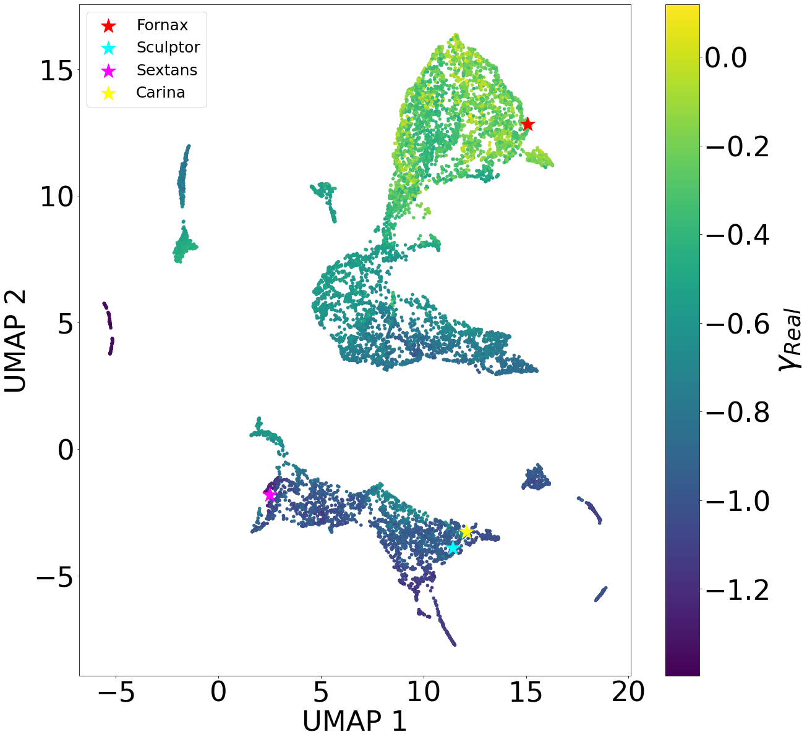
بالمقارنة مع GravSphere والشيفرات المشابهة، يكون نهج الشبكة العصبية أسرع بكثير. ففي حاسوب محمول حديث، يحتاج GravSphere إلى نحو نصف يوم لإجراء تحليل لإحدى هذه المجرات، في حين يمكن تدريب الشبكة العصبية بكمية البيانات المستخدمة في هذا العمل في أقل من نصف ساعة على وحدة معالجة رسومية قياسية. علاوة على ذلك، فإن التدريب والتقييم عمليتا حساب مستقلتان في نموذج الشبكة العصبية، مما يعني أنه بعد تدريب النموذج، يكون تطبيقه على أي بيانات مدخلة لبناء التوزيع اللاحق شبه فوري. ولن تتغير هذه الخاصية مهما جرى توسيع النموذج وتعقيده لإجراء تحليلات أكمل للمجرة موضع الاهتمام.
4.2 اختبار تشابه بيانات التدريب والبيانات الرصدية
عند تدريب شبكة عصبية على المحاكاة ثم إجراء الاستدلال على بيانات حقيقية، يوجد دائما خطر أن تكتشف الشبكة وتتعلم سمات محددة لشيفرة المحاكاة لا تقابل الواقع، مما يسبب مشكلات عند تفسير البيانات الرصدية، لأنها تمتلك خصائص مختلفة عن تلك المستخدمة في مجموعة التدريب. ويمكننا اختبار الدرجة التي ترى بها شبكتنا البيانات الرصدية مكافئة للبيانات التي تدربت عليها من خلال رصد فضاء معاملات مجموعة بيانات الاختبار، المعرف بأنه مجموعة كل توليفات المعاملات الستة المقابلة لكل عنصر من عناصر تلك المجموعة. وبالتحديد، تُعرّف مخرجاتنا بمتوسط وانحراف معياري ووزن لغاوسيين: وسيكون لفضاء المعاملات سداسي الأبعاد 6 مناطق مأهولة بالنقاط ومناطق خالية تماما، تقابل توليفات المعاملات التي لا تعلّم خصائص أي نظام فيزيائي موجود في مجموعة البيانات. فإذا لم تر الشبكة العصبية اختلافات في المدخلات بالنسبة إلى البيانات التي تدربت عليها، فإن المعاملات الناتجة من تقييم البيانات الرصدية بنموذجنا ستقع ضمن المناطق المأهولة في فضاء معاملات مجموعة بيانات المحاكاة.
ولكي نتمكن من تصور فضاء المعاملات سداسي الأبعاد 6 واختبار ما إذا كان الأمر كذلك، نستخدم تقنية تقريب وإسقاط متعدد الشعب المنتظم لاختزال الأبعاد (UMAP) من McInnes et al. (2018) لإجراء اختزال بعدي من 6D إلى 2D، بحيث تُرسم كل توليفة من المتوسطات والانحرافات المعيارية والأوزان إلى معاملين لابعديين فقط يمثلان ذلك ‘الانكماش’، مع الحفاظ على البنية العالمية لفضاء المعاملات الأصلي. وهذا يتيح تصور فضاء المعاملات في 2D. ويمكن رؤية نتيجة عملية الاختزال البعدي من عينة الاختبار الكاملة في الشكل 11، إلى جانب موضع المجرات القزمة المرصودة الأربع المبينة في فضاء المعاملات نفسه، مع الإشارة إلى كل منها بنجمة ملونة. وكما هو متوقع، يرتبط الموضع المكاني للنقاط في فضاء المعاملات بقوة بقيمة ميلها الداخلي: إذ تتجمع النقاط ذات الميل الداخلي المتشابه معا، مما يبين أن الشبكة تعلّم الميل الداخلي للمجرات بصورة سليمة أثناء التدريب. ومن اللافت أن المجرات المرصودة الأربع تقع في المناطق التي تشغلها المجرات المحاكاة، مما يشير إلى أن النموذج يعدها بيانات ذات طبيعة مكافئة لبيانات الاختبار. غير أن كون المجرات الأربع كلها قريبة من حواف معاملات مدخلات المحاكاة قد يشير إلى وجود بعض السمات التي لم يجدها النموذج في المحاكاة. وسيجري استكشاف الأسباب المحتملة لذلك في عمل مستقبلي يستخدم عينة رصدية أكبر.
5 الاستنتاجات
نقدم نموذجا جديدا لتحديد ميل ملف الكثافة الداخلي لهالات المادة المظلمة (DM) مع تكميم متين للايقين باستخدام تقنيات تعلم الآلة. وهدف هذا العمل هو التمكن من استنتاج ميول الكثافة هذه () بمجرد استخدام مواضع النجوم وسرعاتها داخل المجرات. تستخدم طريقتنا شبكات عصبية التفافية لكثافة المزائج مع طبقة كثافة غاوسية خلفية لنمذجة البنية التحتية المجرية المعقدة. نستخدم سرعات خط البصر ومواضع النجوم المسقطة على السماء داخل مجرات قزمة محاكاة، مستعملين تقديرات كثافة النواة (KDEs) لبناء دوال كثافة احتمال (PDFs) مستمرة ثنائية الأبعاد 2 لتوزيع هذه النجوم في فضاء الطور {} وفضاء الطور {x,y}، وهي تعمل مدخلاتٍ لشبكتنا العصبية باستخدام بنية ثنائية القناة (الشكل 3 و 4).
ندرب نموذجنا ونقيّمه باستخدام مجموعة كبيرة من المحاكاة الكوسمولوجية الكاملة للمجرات القزمة ذات كتل هالات من إلى M⊙، وكتل نجمية من إلى M⊙، من مشروعي NIHAO و AURIGA (Wang et al., 2015; Dutton et al., 2020; Grand et al., 2017). ويتيح لنا استخدام نماذج فيزيائية مختلفة موظفة في هذه المحاكاة امتلاك نطاق من ملفات الكثافة عند كل كتلة مجرية بعينها، بما يشمل اللباب والحدبات معا (الشكل 1). وتُسقط جميع المجرات المحاكاة ومجموعاتها الفرعية من النجوم عشوائيا في عدة مستويات سماوية لمحاكاة عدة زوايا رؤية.
دالة الخسارة المراد تقليلها أثناء التدريب هي الاحتمالية اللوغاريتمية السالبة لعينة التدريب، المعرفة بوصفها توزيع احتمال غاوسيا متعدد المتغيرات، وهو خرج طبقة الكثافة الغاوسية الخلفية لدينا. وهذا يتيح تمثيلا احتماليا مرنا للنتائج، ينتج لايقينات دقيقة ومتسقة إحصائيا. ولكل مجرة تخرج الشبكة العصبية دالة كثافة احتمال تعطي الاحتمال اللاحق لأن يكون ميل معين هو الميل الداخلي للمجرة.
تُدرج النتائج الرئيسية لهذا العمل هنا:
- •
-
•
82 (98) من المجرات يُحدد ميلها الداخلي على نحو صحيح ضمن 0.1 (0.3) من قيمته الحقيقية (الجدول 1)؛
-
•
تمتلك دوال كثافة الاحتمال اللاحقة متوسط انحراف معياري قدره ، مما يظهر عدم وجود انحياز نحو دقة أكبر للمجرات الحدبية أو اللبية (الشكل 7)؛
- •
- •
-
•
وجدنا أن مجرة Fornax الكروانية القزمة تُظهر دلالة قوية على امتلاك لب مركزي من المادة المظلمة، وأن Carina و Sextans تمتلكان حدبتين (مع لايقين كبير في الأخيرة)، في حين تُظهر Sculptor دالة كثافة احتمال ثنائية القمة تشير إلى تفضيل الحدبة، لكن لا يمكن استبعاد اللب (الشكل 10). وتتفق هذه النتائج مع عدة ميول داخلية مشتقة سابقا لهذه المجرات.
يمكن استخدام البنية الحالية أساسا لبناء نماذج توفر خرجا أكثر اكتمالا، مثل التنبؤ بملف الكثافة الكامل للمجرات. وتتيح طبيعة الشبكة العصبية تمديدها وتحسينها باستمرار. ومع أننا نفذنا شبكة ذات تعقيد منخفض نسبيا، فهناك سلسلة من الإمكانات المثيرة للاهتمام بمستوى إضافي من التطور تستحق الاستكشاف. فعلى سبيل المثال، قد يؤدي استخدام التدفقات المطَبِّعة إلى نتائج أكثر متانة (Kodi Ramanah et al., 2020)، في حين أعطى استخدام شبكة التفافية ثلاثية الأبعاد 3D مطبقة على دوال كثافة احتمال معرفة في فضاء الطور {x,y,} نتائج جيدة في استدلال كتل عناقيد المجرات (Kodi Ramanah et al., 2021).
في المستقبل، يمكن توسيع بنية هذا النموذج بإدراج مزيد من بيانات المدخلات، مثل ملفات السطوع السطحي أو الحركة الخاصة للنجوم من بعثات مثل GAIA (Gaia Collaboration et al., 2021). علاوة على ذلك، سيكون إدراج عينات طيفية أخرى موجودة في الأدبيات، وكذلك تلك التي ستُكتسب قريبا بالمرافق القادمة، مفيدا بالتأكيد لهذا التحليل. وقد يمكّن تكييف البنية وإدخال مزيد من المعلومات الشبكة من تحسين الدقة وتقليل نطاق تباين النتائج بالنسبة إلى زاوية الرصد، وهو مسار سيُستكشف في أعمال مستقبلية.
لقد بينا أن تقنيات التعلم العميق توفر طريقة مبتكرة لتحديد ملفات المادة المظلمة الداخلية في المجرات القزمة، مكملة لاستخدام نمذجة جينز وشفارتزشيلد، مع تحقيق دقة كبيرة وتقديم تمثيل معقد للايقينات.
إن طريقة الشبكة العصبية التي طورناها حديثا أداة واعدة لدراسة توزيع الكتلة داخل المجرات القزمة، وهو ما يمكن بدوره أن يساعد في التمييز بين النماذج المختلفة، ومن ثم في تقييد خصائص المادة المظلمة المراوغة.
الشكر والتقدير
مساهمة المؤلفين: قاد C.B.B. المشروع. أجرى J.E.M. التحليل. كتب J.E.M. و A.D.C. المخطوطة. طور J.E.M. و M.H.C. بنية تعلم الآلة. أشرف C.B.B. و M.H.C. و A.D.C. على الطالب أثناء المشروع. وقدّم A.V.M. و R.J.J.G. بيانات المحاكاة. ساعد G.B. في اختيار مجموعة البيانات الرصدية. وقدّم جميع المؤلفين ملاحظات على المسودة.
يتلقى CB دعما من وزارة العلوم والابتكار الإسبانية (MICIU/FEDER) من خلال منحة البحث PID2021-122603NB-C22. ويتلقى ADC دعما من زمالة Junior Leader من مؤسسة ‘La Caixa’ (ID 100010434)، الرمز LCF/BQ/PR20/11770010. كما تقر بفضل جامعة Macquarie على الاستضافة أثناء إعداد هذا العمل بصفتها زميلة زائرة فخرية. يقر G.B. بالدعم من Agencia Estatal de Investigación del Ministerio de Ciencia en Innovación (AEI-MICIN) تحت مراجع المنح PID2020-118778GB-I00/10.13039/501100011033 ورقم المنحة CEX2019-000920-S. ويقر الزميل R.G. بالدعم المالي من وزارة العلوم والابتكار الإسبانية (MICINN) عبر وكالة البحث الحكومية الإسبانية، ضمن برنامج Severo Ochoa 2020-2023 (CEX2019-000920-S). أُنجز جزء من هذا البحث على موارد الحوسبة عالية الأداء في جامعة نيويورك أبوظبي (الإمارات العربية المتحدة).
توافر البيانات
البيانات المستخدمة في هذا العمل متاحة بناء على طلب معقول إلى المؤلف المراسل وإلى الباحثين الرئيسيين في مشروعي NIHAO و AURIGA.
References
- Agnello & Evans (2012) Agnello A., Evans N. W., 2012, ApJ, 754, L39
- Battaglia et al. (2008) Battaglia G., Helmi A., Tolstoy E., Irwin M., Hill V., Jablonka P., 2008, ApJ, 681, L13
- Battaglia et al. (2022) Battaglia G., Taibi S., Thomas G. F., Fritz T. K., 2022, A&A, 657, A54
- Benítez-Llambay et al. (2019) Benítez-Llambay A., Frenk C. S., Ludlow A. D., Navarro J. F., 2019, MNRAS, 488, 2387
- Binney & Mamon (1982) Binney J., Mamon G. A., 1982, MNRAS, 200, 361
- Breddels, Maarten A. & Helmi, Amina (2013) Breddels, Maarten A. Helmi, Amina 2013, A&A, 558, A35
- Breddels et al. (2013) Breddels M. A., Helmi A., van den Bosch R. C. E., van de Ven G., Battaglia G., 2013, Monthly Notices of the Royal Astronomical Society, 433, 3173
- Brook & Di Cintio (2015) Brook C. B., Di Cintio A., 2015, MNRAS, 450, 3920
- Bullock & Boylan-Kolchin (2017) Bullock J. S., Boylan-Kolchin M., 2017, ARA&A, 55, 343
- Cappellari et al. (2006) Cappellari M., et al., 2006, MNRAS, 366, 1126
- Chan et al. (2015) Chan T. K., Kereš D., Oñorbe J., Hopkins P. F., Muratov A. L., Faucher-Giguère C.-A., Quataert E., 2015, MNRAS, 454, 2981
- Collins et al. (2021) Collins M. L. M., et al., 2021, MNRAS, 505, 5686
- Di Cintio et al. (2014a) Di Cintio A., Brook C. B., Macciò A. V., Stinson G. S., Knebe A., Dutton A. A., Wadsley J., 2014a, MNRAS, 437, 415
- Di Cintio et al. (2014b) Di Cintio A., Brook C. B., Dutton A. A., Macciò A. V., Stinson G. S., Knebe A., 2014b, MNRAS, 441, 2986
- Dutton et al. (2020) Dutton A. A., Buck T., Macciò A. V., Dixon K. L., Blank M., Obreja A., 2020, MNRAS, 499, 2648
- Gaia Collaboration et al. (2021) Gaia Collaboration et al., 2021, A&A, 649, A1
- Gal & Ghahramani (2015) Gal Y., Ghahramani Z., 2015, Proceedings of The 33rd International Conference on Machine Learning
- Geha et al. (2006) Geha M. C., Guhathakurta P., Rich R. M., Cooper M. C., 2006, The Astronomical Journal, 131, 332
- Gentile et al. (2004) Gentile G., Salucci P., Klein U., Vergani D., Kalberla P., 2004, MNRAS, 351, 903
- Ghosh et al. (2022) Ghosh A., et al., 2022, GaMPEN: A Machine Learning Framework for Estimating Bayesian Posteriors of Galaxy Morphological Parameters, doi:10.48550/ARXIV.2207.05107, https://arxiv.org/abs/2207.05107
- Gnedin & Zhao (2002) Gnedin O. Y., Zhao H., 2002, Monthly Notices of the Royal Astronomical Society, 333, 299
- Goerdt et al. (2006) Goerdt T., Moore B., Read J. I., Stadel J., Zemp M., 2006, Monthly Notices of the Royal Astronomical Society, 368, 1073
- Governato et al. (2010) Governato F., et al., 2010, Nature, 463, 203
- Grand et al. (2017) Grand R. J. J., et al., 2017, Monthly Notices of the Royal Astronomical Society, 467, 179
- Hayashi et al. (2020) Hayashi K., Chiba M., Ishiyama T., 2020, The Astrophysical Journal, 904, 45
- Ho et al. (2019) Ho M., Rau M. M., Ntampaka M., Farahi A., Trac H., Póczos B., 2019, The Astrophysical Journal, 887, 25
- Jaffe (1983) Jaffe W., 1983, MNRAS, 202, 995
- Kaplinghat et al. (2016) Kaplinghat M., Tulin S., Yu H.-B., 2016, Phys. Rev. Lett., 116, 041302
- Kingma & Ba (2014) Kingma D. P., Ba J., 2014, Adam: A Method for Stochastic Optimization, doi:10.48550/ARXIV.1412.6980, https://arxiv.org/abs/1412.6980
- Kleyna et al. (2001) Kleyna J. T., Wilkinson M. I., Evans N. W., Gilmore G., 2001, ApJ, 563, L115
- Kodi Ramanah et al. (2020) Kodi Ramanah D., Wojtak R., Ansari Z., Gall C., Hjorth J., 2020, MNRAS, 499, 1985
- Kodi Ramanah et al. (2021) Kodi Ramanah D., Wojtak R., Arendse N., 2021, MNRAS, 501, 4080
- Kowalczyk et al. (2017) Kowalczyk K., Łokas E. L., Valluri M., 2017, MNRAS, 470, 3959
- LeCun et al. (2015) LeCun Y., Bengio Y., Hinton G., 2015, nature, 521, 436
- Lelli et al. (2016) Lelli F., McGaugh S. S., Schombert J. M., 2016, AJ, 152, 157
- Macciò et al. (2020) Macciò A. V., Crespi S., Blank M., Kang X., 2020, MNRAS, 495, L46
- McInnes et al. (2018) McInnes L., Healy J., Melville J., 2018, UMAP: Uniform Manifold Approximation and Projection for Dimension Reduction, doi:10.48550/ARXIV.1802.03426, https://arxiv.org/abs/1802.03426
- Merritt et al. (2006) Merritt D., Graham A. W., Moore B., Diemand J., Terzić B., 2006, AJ, 132, 2685
- Moore (1994) Moore B., 1994, Nature, 370, 629
- Navarro et al. (1996a) Navarro J. F., Eke V. R., Frenk C. S., 1996a, MNRAS, 283, L72
- Navarro et al. (1996b) Navarro J. F., Frenk C. S., White S. D. M., 1996b, ApJ, 462, 563
- Pascale et al. (2018) Pascale R., Posti L., Nipoti C., Binney J., 2018, MNRAS, 480, 927
- Pontzen & Governato (2012) Pontzen A., Governato F., 2012, MNRAS, 421, 3464
- Read et al. (2006) Read J. I., Wilkinson M. I., Evans N. W., Gilmore G., Kleyna J. T., 2006, MNRAS, 367, 387
- Read et al. (2019) Read J. I., Walker M. G., Steger P., 2019, MNRAS, 484, 1401
- Richardson & Fairbairn (2014) Richardson T., Fairbairn M., 2014, MNRAS, 441, 1584
- Schneider et al. (2017) Schneider A., Trujillo-Gomez S., Papastergis E., Reed D., Lake G., 2017, Monthly Notices of the Royal Astronomical Society, 470, 1542
- Schwarzschild (1979) Schwarzschild M., 1979, ApJ, 232, 236
- Sheather (2004) Sheather S. J., 2004, Statistical Science, 19, 588
- Simon et al. (2005) Simon J. D., Bolatto A. D., Leroy A., Blitz L., Gates E. L., 2005, The Astrophysical Journal, 621, 757
- Spergel & Steinhardt (2000) Spergel D. N., Steinhardt P. J., 2000, Phys. Rev. Lett., 84, 3760
- Stinson et al. (2006) Stinson G., Seth A., Katz N., Wadsley J., Governato F., Quinn T., 2006, MNRAS, 373, 1074
- Tollet et al. (2016) Tollet E., et al., 2016, MNRAS, 456, 3542
- Walker & Peñarrubia (2011) Walker M. G., Peñarrubia J., 2011, ApJ, 742, 20
- Walker et al. (2009) Walker M. G., Mateo M., Olszewski E. W., 2009, AJ, 137, 3100
- Wang et al. (2015) Wang L., Dutton A. A., Stinson G. S., Macciò A. V., Penzo C., Kang X., Keller B. W., Wadsley J., 2015, MNRAS, 454, 83
- Zhu et al. (2016) Zhu L., van de Ven G., Watkins L. L., Posti L., 2016, MNRAS, 463, 1117
- de Blok et al. (2008) de Blok W. J. G., Walter F., Brinks E., Trachternach C., Oh S.-H., Kennicutt Jr. R. C., 2008, AJ, 136, 2648
- van den Bosch & de Zeeuw (2010) van den Bosch R. C. E., de Zeeuw P. T., 2010, MNRAS, 401, 1770
- van der Marel (1994) van der Marel R. P., 1994, Monthly Notices of the Royal Astronomical Society, 270, 271
الملحق A: تفاصيل نموذج الشبكة العصبية
يمكن وصف الشبكة العصبية رسميا بأنها تقريب قابل للتدريب ومرن لنموذج . وتربط الشبكات بيانات مدخلة بتنبؤ للهدف . وتُعلّم هذه الشبكة بمجموعة من الأوزان القابلة للتدريب ومجموعة من المعاملات الفائقة. وتُحسّن الأوزان تكراريا أثناء التدريب لتقليل دالة خسارة معينة، توفر قياسا لمدى قرب تنبؤ الشبكة من الهدف .
في هذا العمل، نستخدم الشبكات العصبية الالتفافية (CNNs)، وهي صنف من الشبكات العصبية العميقة (DNNs)، لبناء شبكة عصبية تكون فيها بيانات المدخلات هي دالتا كثافة الاحتمال الموصوفتان في القسم 2.2.2، وتكون الأهداف هي الميول الداخلية للمجموعات الفرعية المجرية المرتبطة بهاتين الدالتين. ثم نصنع شبكة عصبية التفافية لكثافة المزائج (MDCNN) بإدماج طبقة كثافة مزائج داخل CNN بوصفها الطبقة الأخيرة.
الشبكات العصبية العميقة
تتكون أي شبكة عصبية من مجموعة من طبقات العصبونات، المعرفة بالدالة التالية:
| (7) |
حيث هو مدخل الطبقة، و مصفوفة الأوزان (حيث يكون كل عنصر وزن كل عنصر من المتجه )، و متجه يسمى معامل الانحياز للطبقة. وتُعرف g() باسم دالة التنشيط، وغايتها كسر الخطية بين مدخل العصبون وخرجه.
الشبكة العصبية العميقة DNN هي شبكة عصبية تتكون من أكثر من طبقة عصبونية واحدة. وتُسمى الطبقات الواقعة بين طبقة الإدخال (الطبقة التي تأخذ بيانات إدخال الشبكة العصبية مدخلاتٍ) وطبقة الإخراج (الطبقة التي تعطي مخرجات الشبكة العصبية) طبقات مخفية.
والشبكة العصبية العميقة ذات التغذية الأمامية هي DNN تُقيّم فيها طبقات العصبونات على التوالي، مع تمرير المعلومات من طبقة إلى أخرى من دون عودة، مما يعني أننا نستطيع وصف خرج للطبقة l-th كما يلي:
| (8) |
يجري تدريب النموذج بتحسين مصفوفات الأوزان . ويُدرّب نموذج على مجموعة من بيانات المدخلات التي تُعرف أهدافها تكراريا. وفي كل تكرار، يُقيّم أداء الشبكة (التشابه بين المخرجات والأهداف ) باستخدام دالة خسارة، وتُحدّث الأوزان لتقليل تلك الدالة بواسطة خوارزمية تحسين. وعندما تتوقف دالة الخسارة عن التناقص وتتقارب إلى قيمة معينة، يقال إن الشبكة قد حُسّنت. ثم يُجرى تقييم الأداء على مجموعة بيانات مستقلة لم يرها النموذج أثناء التدريب.
الشبكات العصبية الالتفافية
CNNs نوع خاص من DNNs ملائم على نحو خاص للمسائل التي تكون فيها المعلومات المترابطة مكانيا حاسمة. والسمة الرئيسية لـ CNN هي وجود طبقات التفاف، تُبنى بطريقة تقصر العصبونات في طبقة ما على تلقي المعلومات من جوار صغير فقط في الطبقة السابقة. وهذا يتيح للعصبونات استخراج سمات بسيطة من مجموعات فرعية من الطبقة السابقة، مُكوِّنة سمات أعلى رتبة في الطبقات اللاحقة.
تُصمم طبقة الالتفاف كما يلي: تُطبق نواة التفاف، يشار إليها عادة بالمرشح، ذات حجم معين وتشفّر مجموعة من العصبونات، على كل بكسل (في حالة الصور ثنائية الأبعاد 2D مدخلاتٍ) من صورة المدخل وجواره أثناء مسحها للمنطقة كلها. ولا يكون بكسل معين في طبقة محددة إلا دالة للبكسلات في الطبقة السابقة التي تقع ضمن النافذة التي تحددها النواة، والمعروفة بالحقل الاستقبالي للطبقة. وينتج عن ذلك خريطة سمات تشفّر قيما مرتفعة في البكسلات التي تطابق النمط المشفر في أوزان وانحيازات العصبونات المقابلة في نواة الالتفاف، والتي تُحسّن أثناء التدريب (Kodi Ramanah et al., 2021).
يمكن وصف طبقة الالتفاف بأنها عملية خطية يُنفذ فيها الالتفاف المتقطع عبر ضرب المصفوفات. وبدلالة المعادلة 8:
| (9) |
حيث هي نواة الالتفاف (المرشح)، و هو الحقل الاستقبالي للعصبون . ويمكن أن تحتوي طبقة التفاف واحدة على عدة مرشحات، تكرر هذه العملية بنوى مختلفة، بانية خرائط سمات كثيرة لكل طبقة، تُعرف بالقنوات.
يُعرّف الحقل الاستقبالي عادة بأبعاد المرشح، والخطوة، ووجود الحشو أو عدمه. ويمكن وصف تطبيق المرشح بأنه عملية إزلاقه فوق صورة المدخل لطبقة الالتفاف. ونسمي الخطوة عدد البكسلات واتجاهها اللذين تحرك بهما المرشح في كل خطوة، و الحشو إضافة بكسلات فارغة حول الحواف بغرض تخفيف فقدان المعلومات قرب الحواف.
عادة تكون CNN سلسلة من أزواج من طبقات التفاف تليها طبقة تجميع بوصفها خطوة أخذ عينات فرعية أو اختزال بعدي، وهي عملية ستخفض صورة المدخل الأولية إلى تمثيل مضغوط للسمات. ثم يُعاد تشكيل ذلك التمثيل بوصفه متجها، يُمرر لاحقا إلى سلسلة من الطبقات الكثيفة (LeCun et al., 2015). يتيح هذا التصميم للشبكة العصبية أن تستخرج ذاتيا سمات مكانية ذات معنى من صورة المدخل. وتبني كومة عدة طبقات التفاف تمثيلا هرميا داخليا للسمات يشفر المعلومات الأكثر صلة من صورة المدخل. ويقوي تكديس طبقات التفاف لاحقة بصورة طبيعية حساسية الطبقات الأكثر داخلية للسمات على مقاييس أكبر فأكبر، لأن حجم الحقل الاستقبالي يصبح أكبر كلما تعمقنا في CNN.
الشبكات العصبية لكثافة المزائج
MDNN هي شبكة ذات طبقات تتبع مخرجاتها توزيعا احتمالياً متعدد الأبعاد، وتسمى طبقات كثافة المزائج. وتأخذ هذه الطبقات، مدخلاتٍ لها، عقدة، حيث يكون عدد المعاملات في التوزيع المرغوب، وتحول قيمها بحيث تحترم قيود معاملات التوزيع وتفسرها بوصفها تلك المعاملات لبنائه. وعند استخدامها الطبقة الأخيرة في الشبكة، فإنها تتيح تحسينا مشتركا للسمات من DNN مع خلفية لاحقة بايزية، جامعة مزايا استخراج السمات العميق مع التمثيل الاحتمالي للنتائج.
تفاصيل البنية
يمكن رؤية المنظر التخطيطي للبنية المستخدمة في هذا العمل في الشكل 4
تُبنى المتتاليات الالتفافية باستخدام أزواج من طبقات الالتفاف والتجميع، تليها طبقة إسقاط. وتخفض طبقات التجميع عينات مدخلاتها على امتداد بعدها المكاني باستخدام طريقة التجميع الأعظمي، التي تأخذ القيمة العظمى ضمن نافذة مدخلات معينة لكل قناة. وتعين طبقات الإسقاط وحدات المدخلات عشوائيا إلى 0 بتواتر معين يسمى معدل الإسقاط، وتقيس البقية بحيث يبقى المجموع على جميع المدخلات دون تغيير. ويتم ذلك لمنع فرط الملاءمة أثناء التدريب. وتبدأ المتتالية المشتركة للطبقات الكثيفة بطبقة تطبيع تطبق تطبيع الدفعات على العقد القادمة من المتتاليات الالتفافية السابقة. ويحافظ هذا التطبيع على متوسط الخرج قريبا من 0 وعلى انحرافه المعياري قريبا من 1. وتعطي طبقة كثافة المزائج النهائية توزيعا احتماليا معرفا في نطاق الميول الداخلية الممكنة لمجموعة فرعية مجرية معينة، وتحول CNN ثنائية القناة لدينا إلى MDCNN. ويُفهم هذا التوزيع الاحتمالي بوصفه توزيعا لاحقا تحت التوزيع القبلي للميول الداخلية الذي تدربت به الشبكة، مما يتيح لنا تقييم لايقين التنبؤات الفردية للنموذج.